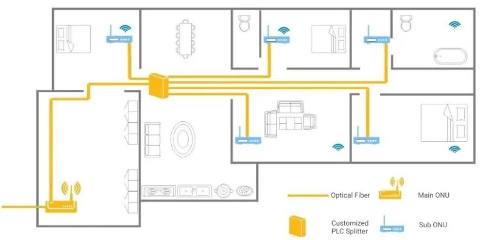

Veille technologique - FTTR (Fiber to the Room)
Le FTTR, ou Fiber To The Room, est une technologie récente d’extension de la fibre optique jusqu’aux différentes pièces d’un logement ou d’un bâtiment. Contrairement à la fibre classique qui s'arrête au niveau de la box (souvent installée dans le salon), le FTTR permet de déployer des fibres optiques secondaires dans chaque pièce, garantissant ainsi une connexion haut débit stable et homogène partout dans l’habitation.
Cette technologie est particulièrement utile pour répondre aux besoins croissants en bande passante, notamment avec le télétravail, les objets connectés, la domotique ou encore le streaming en haute définition. Le FTTR vise à éliminer les pertes de performance liées au Wi-Fi ou aux câbles Ethernet, en assurant une connexion ultra-rapide, même à l'étage ou dans des zones éloignées de la box.
En France, l'opérateur alsacien Vialis est pionnier dans le déploiement du FTTR. Depuis début 2025, Vialis propose cette technologie dans environ 70 communes d'Alsace, avec pour objectif d'étendre la couverture à 700 communes d'ici fin 2025. Le FTTR de Vialis offre des débits allant jusqu'à 8 Gbit/s symétriques, grâce à des câbles discrets de 1,2 mm installés le long des plinthes, connectant la box principale à des satellites dans chaque pièce. Cette solution garantit une connectivité homogène et stable dans toute l'habitation.
Au Japon, pays reconnu pour son avancée technologique, le FTTR est en phase de développement. Des entreprises japonaises collaborent avec des partenaires internationaux pour tester et déployer cette technologie dans des environnements résidentiels et commerciaux. L'objectif est d'améliorer la couverture réseau et de répondre aux besoins croissants en bande passante, notamment avec l'essor des objets connectés et des services numériques. Bien que le FTTR ne soit pas encore généralisé au Japon, les initiatives en cours laissent présager une adoption plus large dans un avenir proche.

Veille technologique - DATIS
Inspeere est une société française créée en 2019, par Olivier Dale et Michaël Ferrec, spécialisée dans les solutions de sauvegarde professionnelle distribuée. Basée à Poitiers et organisée en SAS, l’entreprise s’appuie sur des travaux de recherche du CNRS et de l’Université Côte d’Azur pour proposer un système de sauvegarde innovant, souverain, hautement sécurisé et éco-responsable. Sa technologie brevetée répartit les données sur plusieurs sites, ce qui renforce la résilience, limite les risques de cyberattaques et réduit la dépendance aux data centers. Inspeere commercialise notamment la solution DATIS, soutenue par plusieurs investisseurs publics et privés.
La solution DATIS, c’est quoi ?
1. Architecture distribuée
DATIS n’utilise pas un point de stockage centralisé. Chaque site (appelé DatisBox) participe au stockage partagé, formant un réseau de sauvegarde pair-à-pair (P2P).
- Les données sont découpées en blocs
- Chaque bloc est chiffré et redondé
- Les blocs sont répartis sur plusieurs sites clients
Grâce à cette topologie :
- Il n’existe pas de point de défaillance unique
- Une attaque ou une panne localisée ne compromet pas l’intégrité des données
- La capacité cumulée du réseau augmente en même temps que le nombre de nœuds
2. Protection renforcée contre les cybermenaces
Avec la montée des ransomware et intrusions, DATIS propose une protection radicalement différente :
- Chaque fragment de données est illisible hors contexte, car il est chiffré et incomplet seul
- La restauration nécessite la combinaison de blocs provenant de plusieurs sites
- L’exécution de snapshots distribués permet une restauration sûre même en cas d’attaque locale
Ce modèle rend les données :
- Plus difficiles à identifier
- Très complexes à compromettre
- Inaccessibles sans réunir plusieurs éléments cryptographiques distincts
3. Intégration poussée avec ZFS
DATIS s’appuie sur ZFS, considéré comme l’un des systèmes de fichiers les plus résilients du marché. Inspeere a développé des extensions propriétaires permettant :
- Le transfert de flux ZFS (ZFS streams) en temps réel vers plusieurs cibles
- L’exécution de snapshots simultanés distribués
- Une garantie d’intégrité end-to-end
Cette intégration assure :
- Une surveillance permanente
- Une récupération granulaire et fiable
- L’absence de corruption silencieuse de données (ZFS scrub)
4. Performances de restauration améliorées (QoS)
L’un des défis des sauvegardes distribuées est la vitesse de récupération. DATIS intègre un mécanisme d’optimisation breveté :
- Lors d’une restauration, le système identifie les nœuds les plus disponibles
- Le flux de récupération est équilibré automatiquement
- La latence réseau est prise en compte dans le choix des sources
Résultat :
- Restauration plus rapide, même sur un réseau étendu
- Charge homogène sur l’ensemble des nœuds
5. Solution souveraine et conforme
DATIS s’aligne sur les attentes françaises et européennes :
- Stockage des données chez le client ou dans son réseau de partenaires
- Pas de transfert automatique vers des clouds extra-européens
- Respect des recommandations CNIL
- Maîtrise complète des clés de chiffrement
Ce positionnement “souverain par construction” séduit :
- Les collectivités
- Les PME et ETI sensibles
- Les structures médicales
- Les organisations soumises au RGPD ou aux exigences ANSSI
6. Impact écologique positif
- Réduit la consommation énergétique globale
- Valorise l’infrastructure existante des clients
- Encourage une logique d’économie circulaire numérique
Le stockage ne demande pas d’immenses salles serveurs, mais réutilise les ressources déjà présentes dans les organisations.
7. Technologies et écosystème
- Debian / Linux
- ZFS
- Proxmox / LXC
- FastAPI / VueJS
- Suricata, Fail2Ban
- Hyperledger Fabric (DLT)
- OpenVPN
- OpenSSH, OpenSSL
Ces briques assurent :
- Transparence technologique
- Auditabilité du code
- Pérennité et absence de dépendance à un éditeur unique
Conclusion
DATIS se distingue comme une solution de sauvegarde :
- Distribuée, souveraine et hautement sécurisée
- Plus résiliente que les approches centralisées
- Alignée avec les enjeux actuels : ransomware, continuité de service, réduction énergétique
Son modèle hybride entre technologies open-source, innovation académique et optimisation cryptographique en fait une solution originale sur le marché de la sauvegarde professionnelle et un sujet particulièrement pertinent pour une veille technologique sur la cybersécurité et la protection de données.